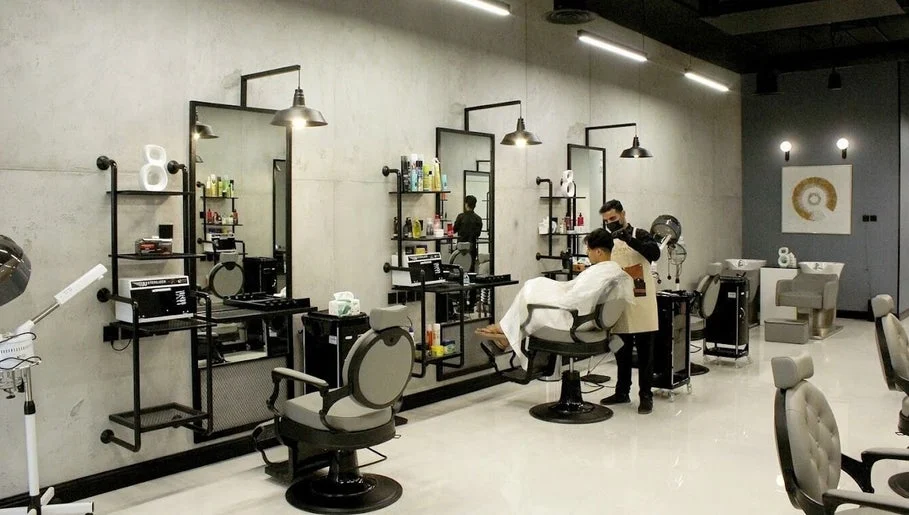
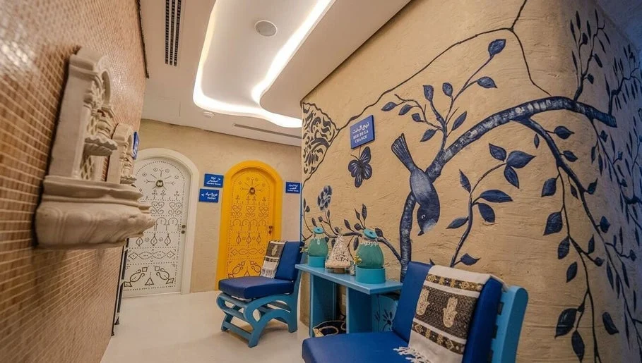
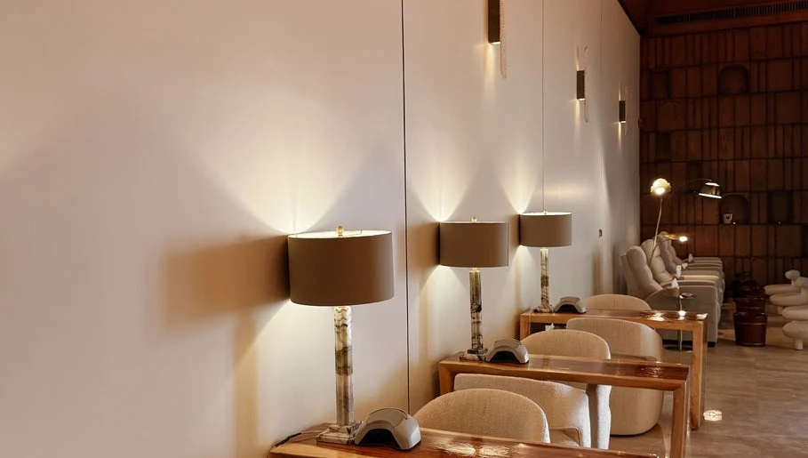
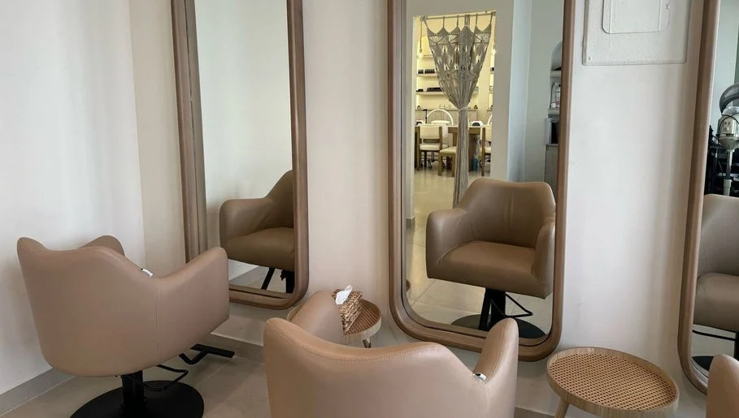
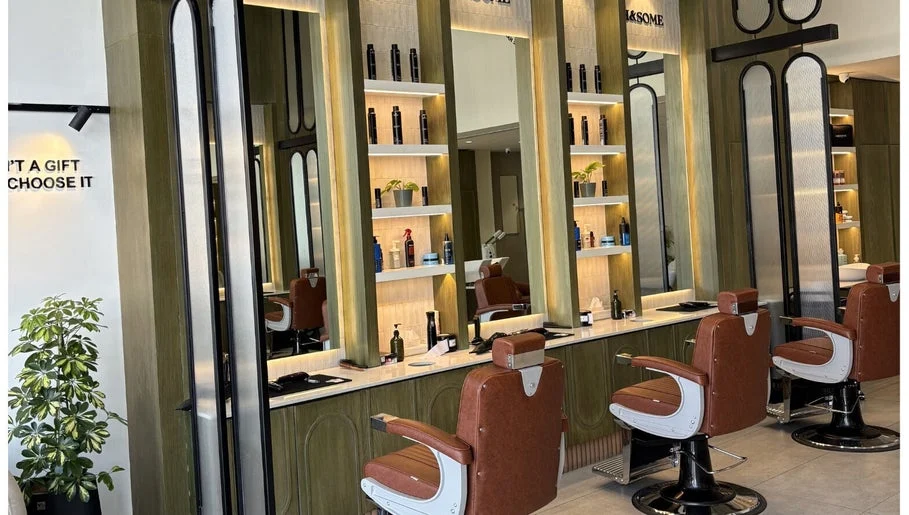

أدان
الرياض، النرجس — Adan

العهد الجميل
جدة، السنابل — Alahad Beauty

ليا سبا وصالون
الرياض، العليا — LYA

ستراند
الرياض، النخيل — strand

لاست تاتش
الرياض، الملك فيصل — Last Touch

أولفا
الرياض، العليا — OLVA

وفاء التميز
جدة، الشاطئ — Wafaa Altamayoz

هاندسم
الرياض، الصحافة — H&Some

الأغصان الأربعة
الرياض، الغدير — Four Branches

دار مضاوي
الرياض، حي الملك سلمان — Dar Madawi